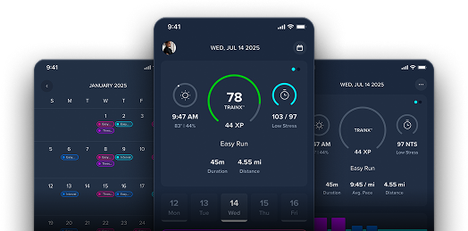

| |||||||
 | |||||||
ROSE BOWL HALF MARATHON & 5K / JANUARY 18, 2027 Your race. Your training. | |||||||
Hi [First Name], The Rose Bowl finish line is on the calendar. Let RunDot build every session around your goals, your data, and how you’re responding to training. | |||||||
No guesswork. No generic plans. | |||||||
| |||||||
| START TRAINING RunDot adapts to you, every day, every run. | |||||||
|